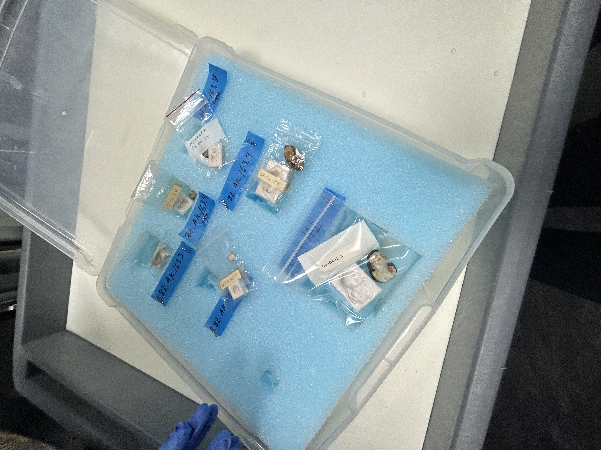
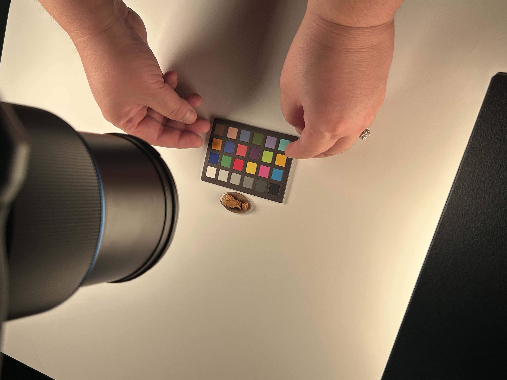
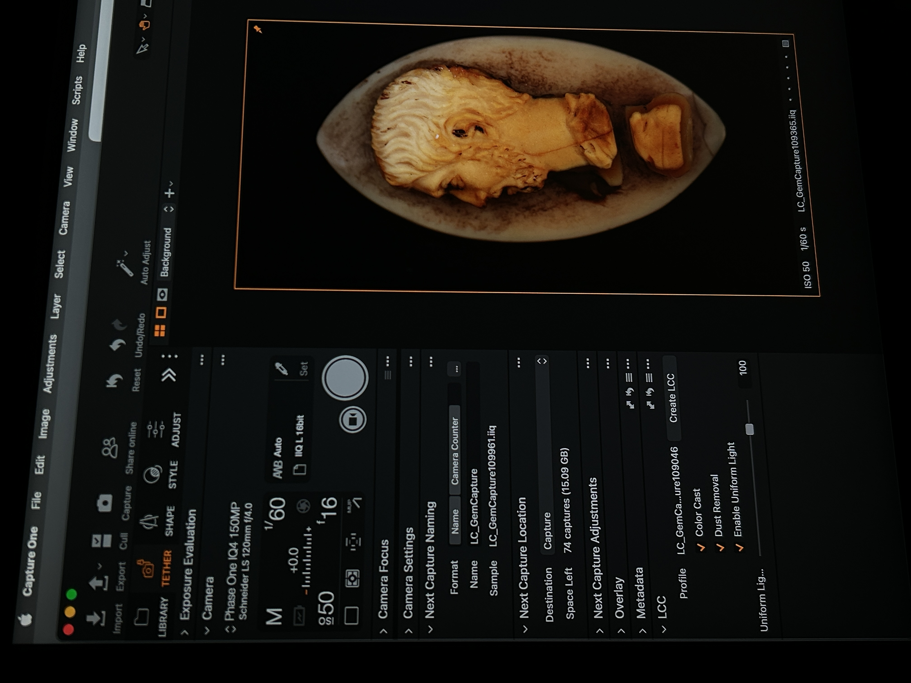
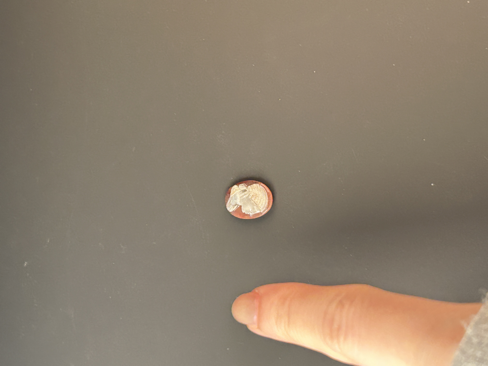
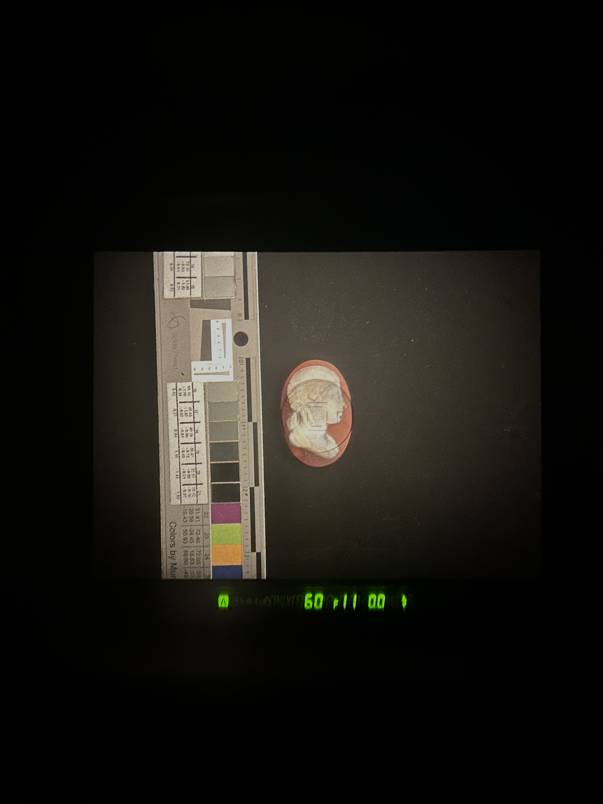
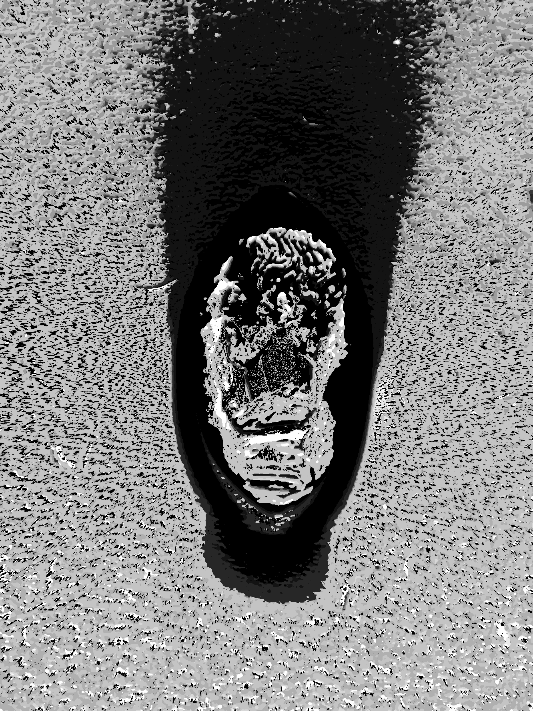
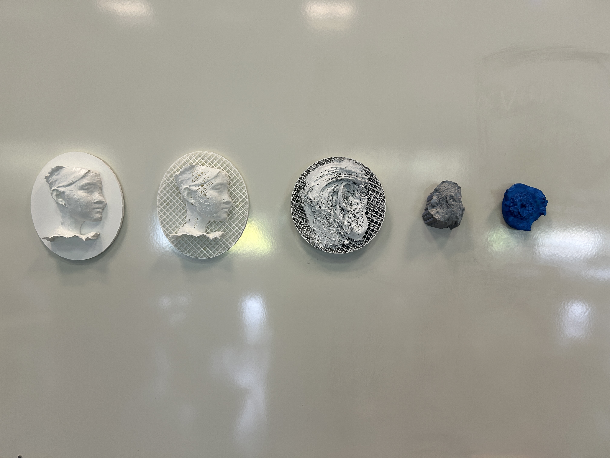

Cameo gems are carved in shallow relief from layered stone — usually onyx or sardonyx — with the figure raised against a contrasting background. They're small, translucent, and optically complex, and the Getty Villa has hundreds of them. I went there to find out whether confocal stereo could extract their 3D surface geometry without contact.
Confocal stereo reconstructs depth by varying aperture and focus across a bracket of images, analyzing how pixel intensity scales with aperture — a property that holds for diffuse surfaces. The technique requires no special equipment beyond what a well-equipped imaging studio already has: the idea was that if it worked, any institution could run it.
It mostly didn't work on the gems. Translucent sardonyx violates the diffuse surface assumption badly enough to produce noisy depth maps. But the failure was informative. Stone altars with relief carving — more diffuse, more opaque — emerged as a much better candidate. The 3D prints shown here were fabricated from successful reconstructions as physical proof-of-concept, materializing the reconstruction error directly.
- advised by
- Golan Levin, Ioannis Gkioulekas
- in collaboration with
- Getty Villa Imaging Studios
- links
- substack writeup →







